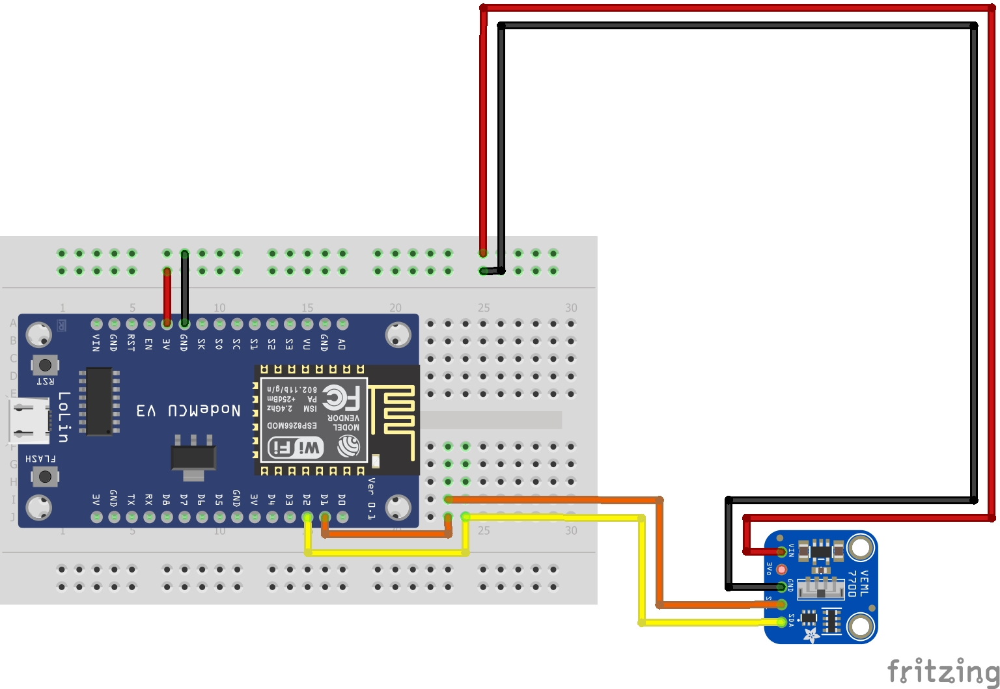

We provide blabla... write a nice 2 sentences of introduction here.
To get started,
- Step 1 - Plug your NodeMCU into this computer via USB.
- Step 2 - Install ("flash") our sensor software onto the NodeMCU.
- Step 3 - Configure wifi, database, and which sensors you want to use below, and hit "SAVE".
- Step 4 - Plug in any sensors you want to use according to the wiring diagrams below.
- Step 5 - That's it. You can now disconnect the NodeMCU and move it to the greenhouse.
Step 1 - Plug in NodeMCU
Make sure your NodeMCU is not connected to any devices (sensors or battery) before plugging it into this computer.
Step 2 - Flash our software onto the NodeMCU
NOTE: Make sure to close anything using your devices com port (e.g. Serial monitor, Arduino IDE, etc.).
Click the FLASH button and follow the on-screen instructions.
Step 3 - Configure your NodeMCU
NOTE: Click the "SAVE & UPLOAD" button when you're done entering all the settings.General Settings
Database Settings
You should get these from whoever is running the database.Sensors
Sensor Name
Use Sensor?
Recording Frequency
Wiring Diagram
Temperature & Humidity Sensor
(BME280)
(BME280)

Lux Sensor
(VEML7700)
(VEML7700)

CO2 Sensor
(CSS811)
(CSS811)

Step 4 - Plug in Sensors
At this point, if you've saved your settings to the NodeMCU and everything went through without any errors, you can unplug the NodeMCU from your computer, plug in any sensors,...
Step 5 - Deploy
...and bring it to the growhouse of your choice. The NodeMCU can be powered through USB (including from a computer, external power adapter, or battery) and by connecting the GND, VIN pins to ground and a 5V or 12V power supply respectively.
Credits and license
TODO: add our names here
Version: 1.10